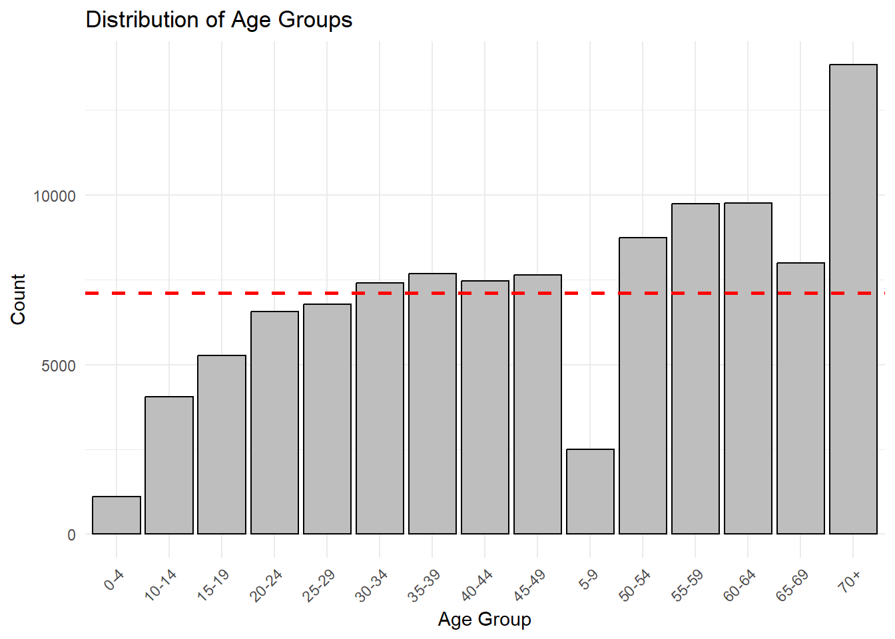
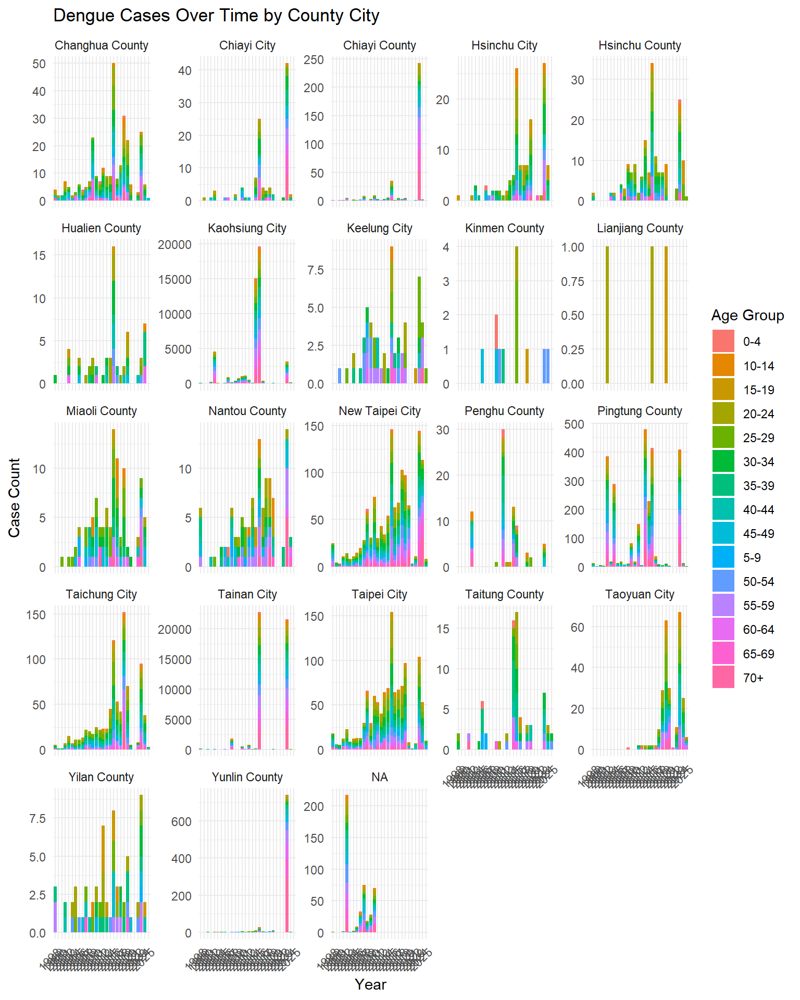
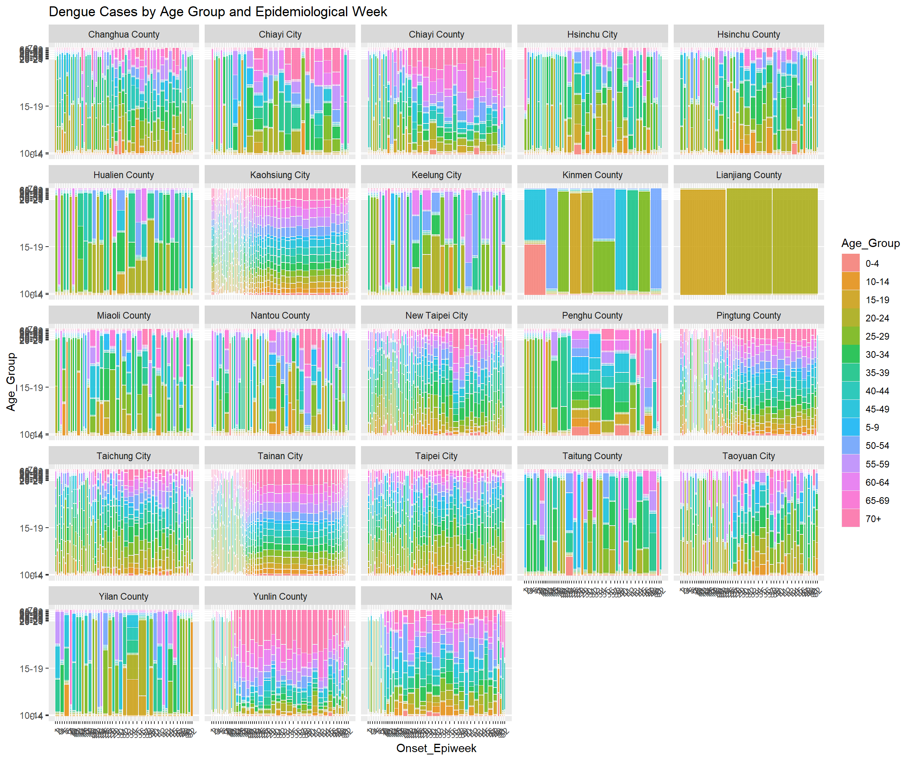
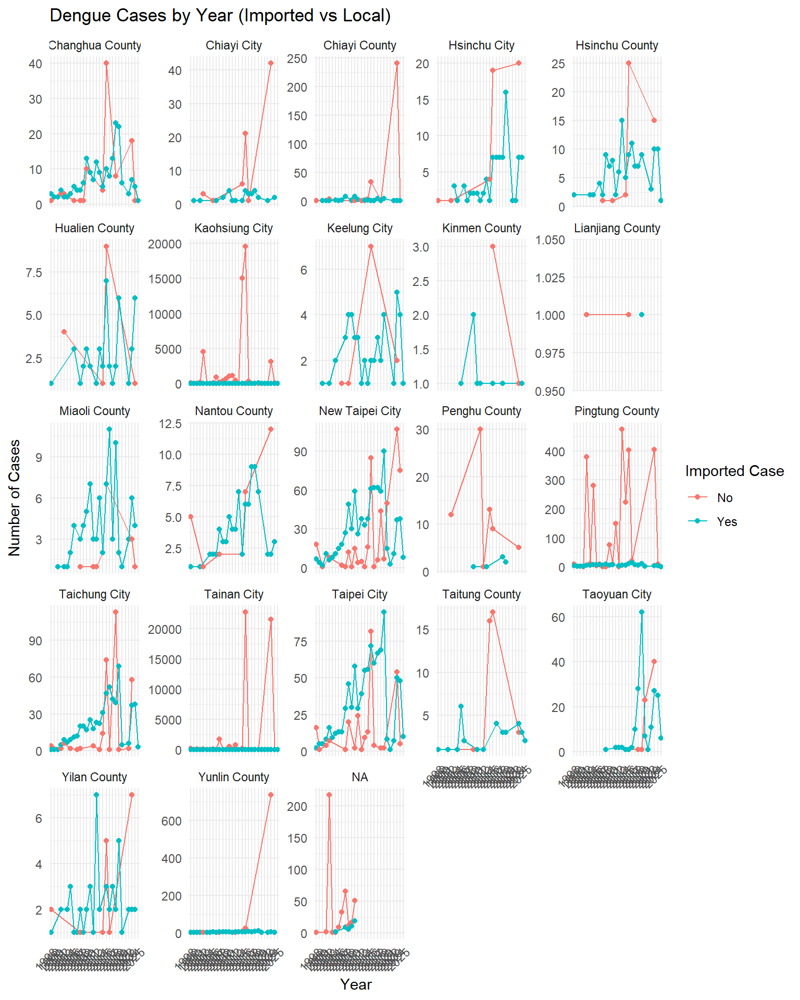
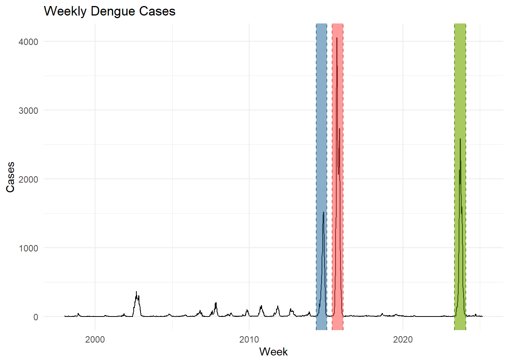
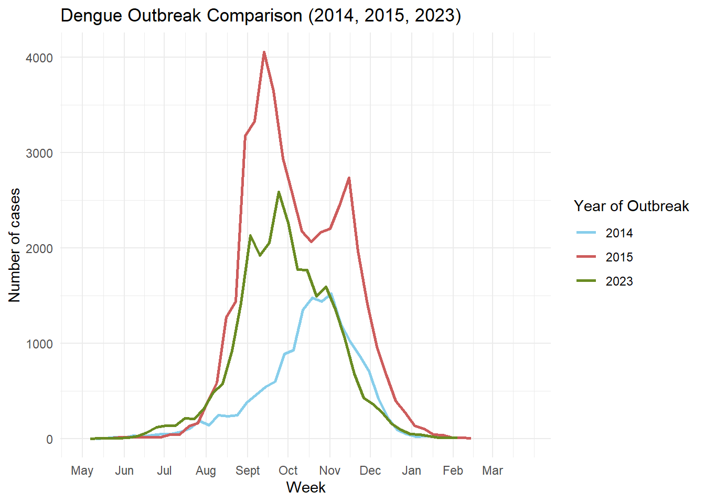
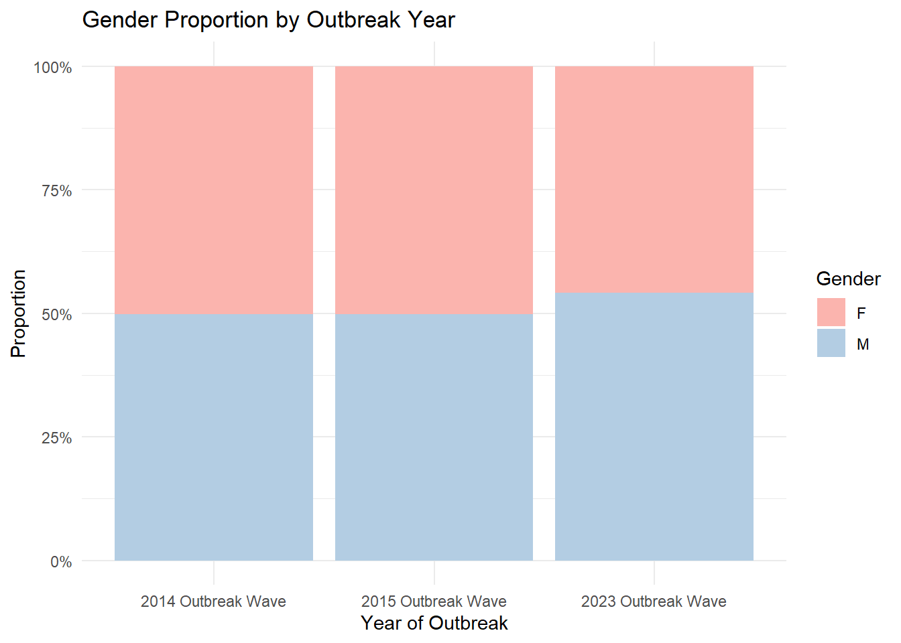
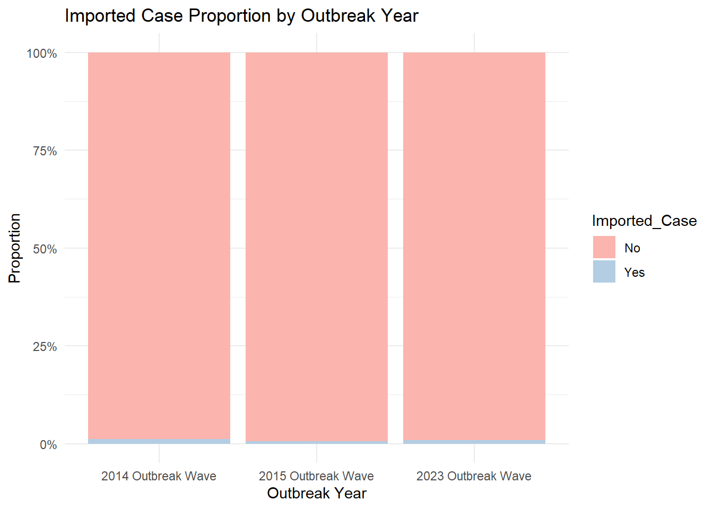
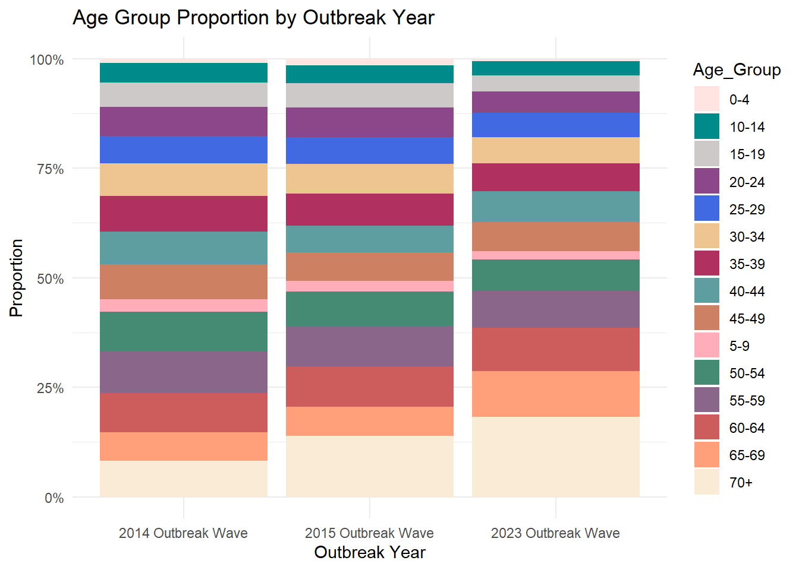
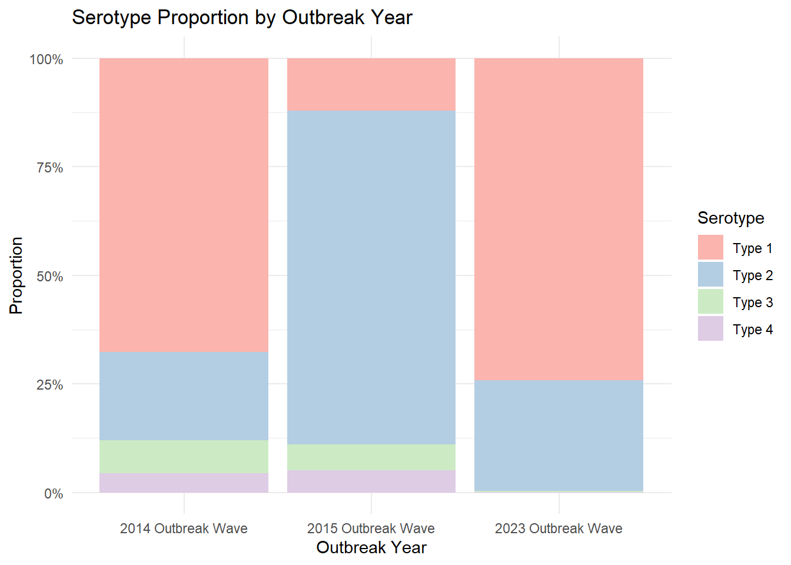

Loading R packages
pacman::p_load(tidyverse, plotly, sf, tmap, GGally, ggstatsplot, ggmosaic)Jia Peng Chua | Zanelle Lee Wenfang
April 3, 2025
Onset_Date Gender Age_Group
Min. :1998-01-02 Length:106525 Length:106525
1st Qu.:2014-10-30 Class :character Class :character
Median :2015-09-30 Mode :character Mode :character
Mean :2016-04-21
3rd Qu.:2023-07-18
Max. :2025-03-07
Residential_County_City Residential_Town_District X_coord
Length:106525 Length:106525 Min. :118.3
Class :character Class :character 1st Qu.:120.2
Mode :character Mode :character Median :120.3
Mean :120.3
3rd Qu.:120.3
Max. :122.0
Y_coord Imported_Case Serotype
Min. :21.93 Length:106525 Length:106525
1st Qu.:22.63 Class :character Class :character
Median :22.96 Mode :character Mode :character
Mean :22.91
3rd Qu.:23.00
Max. :26.16
MOI_Residential_County_Code MOI_Residential_Town_Code Onset_Year
Min. : 63.0 Min. : 900701 Min. :1998
1st Qu.: 64.0 1st Qu.:6400700 1st Qu.:2014
Median : 67.0 Median :6401700 Median :2015
Mean : 540.6 Mean :6283327 Mean :2016
3rd Qu.: 67.0 3rd Qu.:6703300 3rd Qu.:2023
Max. :10020.0 Max. :6801200 Max. :2025
NA's :476 NA's :476
Onset_Epiweek
Min. : 1.0
1st Qu.:36.0
Median :40.0
Mean :39.8
3rd Qu.:45.0
Max. :53.0
dengue_daily_aggregated <- dengue_daily %>%
group_by(Age_Group, Residential_County_City, Onset_Year) %>%
summarize(Count = n(), .groups = "drop")
cases_by_age <- dengue_daily_aggregated %>%
plot_ly(x = ~Age_Group,
y = ~Count,
color = ~Residential_County_City,
text = ~Residential_County_City,
hoverinfo = "text",
type = 'scatter',
mode = 'markers',
frame = ~Onset_Year) %>%
layout(
title = "Dengue Cases by Age Group",
xaxis = list(title = "Age Group"),
yaxis = list(title = "Count of Cases"),
showlegend = FALSE
)
cases_by_ageggplot(data = dengue_daily, aes(x = Age_Group)) +
geom_bar(color = "black", fill = "grey") +
ggtitle("Distribution of Age Groups") +
xlab("Age Group") +
ylab("Count") +
theme_minimal() +
theme(axis.text.x = element_text(angle = 45, hjust = 1)) +
geom_hline(yintercept = mean(table(dengue_daily$Age_Group)),
linetype = "dashed", color = "red", size = 1)
We observe that the number of cases is relatively lower among individuals aged 0 to 19. In contrast, cases are above average for those aged 50 and above, with a noticeable spike among residents over 70 years old.
Let’s visualise the number of dengue cases over time by county city.
dengue_aggregated <- dengue_daily %>%
group_by(Age_Group, Residential_County_City, Onset_Year) %>%
summarize(Count = n(), .groups = "drop")
dengue_aggregated$Onset_Year <- as.factor(dengue_aggregated$Onset_Year)
ggplot(dengue_aggregated, aes(x = Onset_Year, y = Count, fill = Age_Group)) +
geom_bar(stat = "identity") +
facet_wrap(~ Residential_County_City, scales = "free_y") +
theme_minimal() +
labs(
title = "Dengue Cases Over Time by County City",
x = "Year",
y = "Case Count",
fill = "Age Group"
) +
theme(axis.text.x = element_text(angle = 45, hjust = 1))
We noticed significant number of cases in Kaohsiung City and Tainan City, with significant spikes in cases in 2014, 2015 and 2023.
Let’s visualise the dengue cases by epidemiological week.
cases_by_epiweek <- dengue_daily %>%
group_by(Onset_Epiweek, Onset_Year) %>%
summarise(Count = n(), .groups = "drop")
mean_cases <- mean(cases_by_epiweek$Count, na.rm = TRUE)
ggplotly(ggplot(cases_by_epiweek,
aes(x = Onset_Epiweek, y = Count,
color = Onset_Year, group = Onset_Year)) +
geom_line(size = 0.5) +
geom_hline(yintercept = mean_cases,
linetype = "dashed", color = "red", size = 0.2)+
annotate("text", x = 10, y = mean_cases + 60,
label = paste("Mean:", round(mean_cases,1)),
color = "black") +
labs(
title = "Dengue Cases by Epidemiological Week Over the Years",
x = "Epidemiological Week",
y = "Number of Cases",
color = "Year"
)
)We observed an increase in cases starting around epidemiological week 32, with a decline from week 51 onwards. This trend was particularly noticeable in the years 2014, 2015, and 2023.
The spike in 2023 aligns with the post-COVID-19 period when international travel resumed, leading to an influx of tourists visiting Taiwan, which may have contributed to the rise in cases.

Let’s visualise the trend for imported vs local cases.
cases_by_imported_cases <- dengue_daily %>%
group_by(Onset_Epiweek, Imported_Case) %>%
summarize(Count = n(), .groups = "drop")
ggplotly(ggplot(cases_by_imported_cases,
aes(x = Onset_Epiweek, y = Count, color = Imported_Case,
group = Imported_Case)) +
geom_line() +
geom_point() +
labs(title = "Dengue Cases by Epidemiological Week (Imported vs Local)",
x = "Epidemiological Week", y = "Number of Cases",
color = "Imported Case")
)We noticed that the local cases are significantly higher than imported cases from epidemiological week 25 to 51 and epidemiological week 1 to 3.
cases_by_year_facets <- dengue_daily %>%
group_by(Onset_Year, Imported_Case, Residential_County_City) %>%
summarize(Count = n(), .groups = "drop")
cases_by_year_facets$Onset_Year <- as.factor(cases_by_year_facets$Onset_Year)
ggplot(cases_by_year_facets, aes(x = Onset_Year, y = Count, color = Imported_Case, group = Imported_Case)) +
geom_line() +
geom_point() +
labs(title = "Dengue Cases by Year (Imported vs Local)",
x = "Year",
y = "Number of Cases",
color = "Imported Case") +
facet_wrap(~ Residential_County_City, scales = "free_y") +
theme_minimal() +
theme(axis.text.x = element_text(angle = 45, hjust = 1))
As we are focusing on the disease outbreak periods, we will first need to isolate the time period where this outbreak occurs. The data will also be studied by weeks, rather than days.
There are 3 outbreak periods namely in 2014, 2015 and 2023. These will also be referred to as Wave 1, Wave 2 and Wave 3 interchangeably. The start and end dates of these outbreak periods and loaded into wave1_start, wave1_end, wave2_start, wave2_end, wave3_start and wave3_end respectively. The number of cases from the entire dataset is aggregated by weeks are plotted, with the 3 outbreak periods. The 3 outbreak periods are also highlighted.
wave1_start <- as.Date("2014-05-11")
wave1_end <- as.Date("2015-01-25")
wave2_start <- as.Date("2015-05-24")
wave2_end <- as.Date("2016-02-14")
wave3_start <- as.Date("2023-05-07")
wave3_end <- as.Date("2024-02-04")
dengue_daily <- dengue_daily %>%
mutate(Wave = case_when(
Onset_Date >= wave1_start & Onset_Date <= wave1_end ~ "Wave 1",
Onset_Date >= wave2_start & Onset_Date <= wave2_end ~ "Wave 2",
Onset_Date >= wave3_start & Onset_Date <= wave3_end ~ "Wave 3",
TRUE ~ NA_character_
))
ggplot(weekly_cases, aes(x = week, y = cases)) +
geom_line(color = "black") +
#wave1 reference
geom_vline(xintercept = c(wave1_start, wave1_end), color = "skyblue4", linetype = "dashed") +
geom_rect(aes(xmin = wave1_start, xmax = wave1_end,
ymin = -Inf, ymax = Inf),
fill = "skyblue4", alpha = 0.008) +
#wave2 reference
geom_vline(xintercept = c(wave2_start, wave2_end), color = "indianred", linetype = "dashed") +
geom_rect(aes(xmin = wave2_start, xmax = wave2_end,
ymin = -Inf, ymax = Inf),
fill = "indianred", alpha = 0.008) +
#wave3 reference
geom_vline(xintercept = c(wave3_start, wave3_end), color = "olivedrab4", linetype = "dashed") +
geom_rect(aes(xmin = wave3_start, xmax = wave3_end,
ymin = -Inf, ymax = Inf),
fill = "olivedrab4", alpha = 0.008) +
labs(title = "Weekly Dengue Cases", x = "Week", y = "Cases") +
theme_minimal()
The outbreak periods are then loaded into its respective variable - wave1, wave2 and wave3.
To properly compare the shape of the graph, the 3 waves will have to share the same axis. Since the outbreak periods occur almost in the same months in the 3 different years, we will plot the graphs according to months instead.
wave1 <- wave1 %>% mutate(month_day = format(week, "%m-%d"), Outbreak_Year ="2014", aligned_date = if_else(month(week) <= 3,
as.Date(paste0("2024-", month_day)),
as.Date(paste0("2023-", month_day)))
)
wave2 <- wave2 %>% mutate(month_day = format(week, "%m-%d"), Outbreak_Year ="2015", aligned_date = if_else(month(week) <= 3,
as.Date(paste0("2024-", month_day)),
as.Date(paste0("2023-", month_day)))
)
wave3 <- wave3 %>% mutate(month_day = format(week, "%m-%d"), Outbreak_Year ="2023", aligned_date = if_else(month(week) <= 3,
as.Date(paste0("2024-", month_day)),
as.Date(paste0("2023-", month_day)))
)
# Step 2: Combine all into one dataset
all_waves <- bind_rows(wave1, wave2, wave3)
# Step 3: Plot
ggplot(all_waves, aes(x = aligned_date, y = cases, color = Outbreak_Year)) +
geom_line(size = 1) +
scale_x_date(date_labels = "%b",
breaks = seq(as.Date("2023-05-01"), as.Date("2024-03-01"), by = "1 month"),
limits = c(as.Date("2023-05-01"), as.Date("2024-03-28"))
) +
labs(title = "Dengue Outbreak Comparison (2014, 2015, 2023)",
x = "Week", y = "Number of cases", color = "Year of Outbreak") +
scale_color_manual(values = c("2014" = "skyblue",
"2015" = "indianred",
"2023" = "olivedrab4")) +
theme_minimal()
To gain a better understanding of the dataset, we further study the ancillary data surrounding the cases during outbreak period.
The gender proportion is almost equal across both genders.
dengue_daily %>%
filter(!is.na(Wave)) %>%
group_by(Wave, Gender) %>%
summarise(count = n(), .groups = "drop") %>%
group_by(Wave) %>%
mutate(prop = count / sum(count)) %>%
ggplot(aes(x = Wave, y = prop, fill = Gender)) +
geom_col(position = "fill") +
scale_x_discrete(labels = c(
"Wave 1" = "2014 Outbreak Wave",
"Wave 2" = "2015 Outbreak Wave",
"Wave 3" = "2023 Outbreak Wave"
)) +
labs(title = "Gender Proportion by Outbreak Year", y = "Proportion", x = "Year of Outbreak") +
scale_y_continuous(labels = scales::percent) +
theme_minimal() +
scale_fill_brewer(palette="Pastel1")
There are significantly more local cases than foreign ones during outbreak periods.
dengue_daily %>%
filter(!is.na(Wave)) %>%
group_by(Wave, Imported_Case) %>%
summarise(count = n(), .groups = "drop") %>%
group_by(Wave) %>%
mutate(prop = count / sum(count)) %>%
ggplot(aes(x = Wave, y = prop, fill = Imported_Case)) +
geom_col(position = "fill") +
scale_x_discrete(labels = c(
"Wave 1" = "2014 Outbreak Wave",
"Wave 2" = "2015 Outbreak Wave",
"Wave 3" = "2023 Outbreak Wave"
)) +
labs(title = "Imported Case Proportion by Outbreak Year", y = "Proportion", x = "Outbreak Year") +
scale_y_continuous(labels = scales::percent) +
theme_minimal() +
scale_fill_brewer(palette="Pastel1")
Generally, there are more older people that are infected during outbreak periods.
dengue_daily %>%
filter(!is.na(Wave)) %>%
group_by(Wave, Age_Group) %>%
summarise(count = n(), .groups = "drop") %>%
group_by(Wave) %>%
mutate(prop = count / sum(count)) %>%
ggplot(aes(x = Wave, y = prop, fill = Age_Group)) +
geom_col(position = "fill") +
scale_x_discrete(labels = c(
"Wave 1" = "2014 Outbreak Wave",
"Wave 2" = "2015 Outbreak Wave",
"Wave 3" = "2023 Outbreak Wave"
)) +
labs(title = "Age Group Proportion by Outbreak Year", y = "Proportion", x = "Outbreak Year") +
scale_y_continuous(labels = scales::percent) +
theme_minimal() +
scale_fill_manual(values = c("mistyrose", "darkcyan", "snow3", "orchid4", "royalblue", "burlywood2", "maroon", "cadetblue", "lightsalmon3", "lightpink1", "aquamarine4", "plum4", "indianred", "lightsalmon", "antiquewhite"))
There are many rows with NA values. However, the rows with values are all plotted, and it can be seen that the most common strains are Type 1 and Type 2.
dengue_daily %>%
filter(!is.na(Wave)) %>%
filter(!is.na(Serotype)) %>%
group_by(Wave, Serotype) %>%
summarise(count = n(), .groups = "drop") %>%
group_by(Wave) %>%
mutate(prop = count / sum(count)) %>%
ggplot(aes(x = Wave, y = prop, fill = Serotype)) +
geom_col(position = "fill") +
scale_x_discrete(labels = c(
"Wave 1" = "2014 Outbreak Wave",
"Wave 2" = "2015 Outbreak Wave",
"Wave 3" = "2023 Outbreak Wave"
)) +
labs(title = "Serotype Proportion by Outbreak Year", y = "Proportion", x = "Outbreak Year") +
scale_y_continuous(labels = scales::percent) +
theme_minimal() +
scale_fill_brewer(palette="Pastel1")